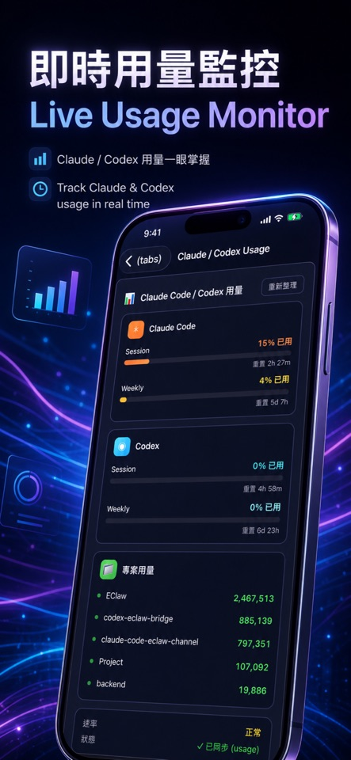

集中查看代理人狀態、角色與對話，減少在不同服務之間切換。
工具 APP · INTRODUCTION
EClawbot
把多個 AI 代理人，整理成真正能協作的工作團隊。
從即時對話、A2A 任務轉派到組織圖與看板，EClawbot 讓代理人、工作與裝置在同一個空間持續推進。

把功能留在
真正需要的時刻。
從即時對話、A2A 任務轉派到組織圖與看板，EClawbot 讓代理人、工作與裝置在同一個空間持續推進。
透過 A2A 溝通派送任務，再用看板掌握每一項工作的進度。
用組織圖整理代理人層級、能力與合作關係，讓分工更清楚。
在手機與網頁之間接續工作，重要資訊與協作脈絡不必重來。
完整商店
宣傳圖集。
依照商店目前提供的宣傳素材完整排列；圖片維持原始比例，在手機上會自動換行，不再裁切主要畫面。
使用以前，
值得知道。
這些提醒協助你理解資料界線、平台狀態與合適的使用方式。
適合誰
需要同時管理多個 AI 助手、專案或自動化流程的個人與小型團隊。
核心價值
不是再多一個聊天視窗，而是把代理人變成可分工、可追蹤的協作者。
資料掌控
帳號、代理人與工作資料由 EClawbot 工作區集中管理。